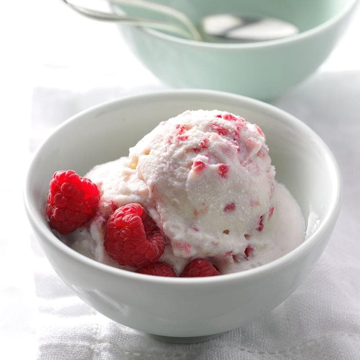

Raspberry Ice Cream
"Making homemade ice cream is fun for the whole family, and the fresh raspberry flavor of this treat makes it a perfect summer activity. Kids can shake the bags until the liquid changes to ice cream and then enjoy the reward! —Erin Hoffman, Canby, Minnesota

Ingredients
- 1 cup half-and-half cream
- 1 teaspoon vanilla extract
- 1/2 cup fresh raspberries
- 1/4 cup sugar
- 3/4 cup salt
- 2 tablespoons evaporated milk
Directions
-
Using two 1-quart resealable plastic bags, place 1 bag inside the other. Place the first 5 ingredients inside the inner bag. Seal both bags, pressing out as much air as possible.
-
Place the 2 bags in a gallon-size resealable plastic freezer bag. Add ice and salt. Seal bag, again pressing out as much air as possible.
-
Shake and knead cream mixture until thickened, about 5 minutes. (If desired, wear mittens or wrap bags in a kitchen towel while shaking to protect hands from the cold ice.)
Return